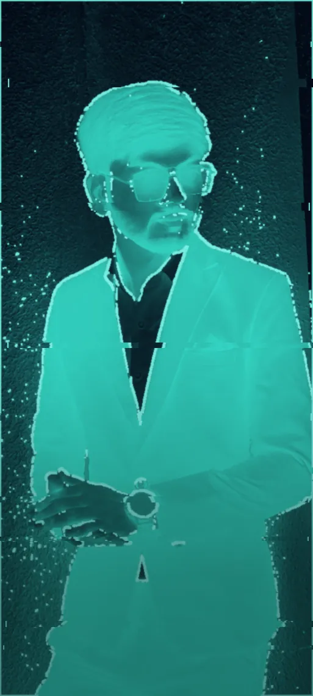

Business Management & Cybersecurity · MSc
I keep systems compliant, monitored & accountable.
Working-student candidate focused on Governance, Risk & Compliance (GRC), Identity & Access Management (IAM) and AI in cybersecurity — with hands-on experience in regulatory training, controls and access reviews, and responsible, AI-driven monitoring.


// About
Compliance instinct, engineer's toolkit.
I'm a Business Management & Cybersecurity master's student who works at the intersection of governance, identity and automation. My experience spans Governance, Risk & Compliance (GRC) — regulatory training, policy and controls documentation — and monitoring flagged activity through structured checks and assessments of system alerts.
Where I add an edge is Identity & Access Management (IAM) and AI in cybersecurity — building responsible, AI-driven workflows for alert triage and access governance. I also deliver security-awareness training and IT / cyber-law–aware guidance, turning regulations into something non-specialists can act on. I'm seeking a Working Student role in GRC, IAM or compliance to support monitoring, ongoing projects and digitalisation, and to grow financial-services and securities knowledge inside a conduct-and-ethics team.
// Capabilities
Skills & frameworks
GRC, SecOps, IAM and AI in cybersecurity — anchored to the regulations and standards that matter in EU financial-services compliance. Hover or tap any item for a quick definition.
Governance, Risk & Compliance (GRC)
- Policy & procedure documentation
- Code of Conduct / acceptable-use training
- Controls monitoring
- Risk assessment & registers
- ISMS implementation (ISO 27001)
- Audit support
- IT & cyber-law awareness
- Regulatory & compliance training
Identity & Access Management (IAM)
- Access control & access reviews
- Joiner–Mover–Leaver (JML)
- Least privilege & RBAC
- Microsoft Entra ID (SC-300)
- Conditional access
- Identity governance
AI in Cybersecurity & Automation
- AI-driven alert triage & risk scoring
- Anomaly detection (Python)
- Workflow automation (Python / PowerShell)
- Microsoft Copilot
- Responsible & ethical AI
- EU AI Act awareness
SecOps · Monitoring & Investigations
- SOC-style alert triage & escalation
- Reviewing system flags & alerts
- Checks & assessments
- SIEM & log analysis (Wazuh)
- Case documentation
- Remediation tracking
- Follow-up communication
Tools & Strengths
- MS Excel
- MS PowerPoint
- MS Office
- SQL
- Discretion with sensitive info
- Attention to detail
- Clear communication
// Career
Experience
Training teams on governance and triaging real alerts — turning policy into day-to-day adherence.
Cybersecurity Trainer · NIIT Foundation
Apr 2025 — Oct 2025- Delivered compliance and policy training to 4500+ students on acceptable-use and access-control requirements, with 95% achieving certification, building day-to-day adherence to governance and Code-of-Conduct-style policies.
- Maintained policy, training and controls documentation in the LMS, keeping records current and audit-ready for review.
- Created awareness content mapped to recognised standards (ISO 27001, NIST CSF), helping non-specialist staff understand and follow compliance requirements.
- Reinforced identity & access fundamentals — RBAC, least privilege and MFA — to reduce policy and access-control exceptions.
Cybersecurity Research Analyst · The CyberDiplomat
Dec 2023 — Mar 2024- Monitored activity across 50+ platforms, performing checks and assessments of flags and alerts and escalating policy and access exceptions for review.
- Tracked each remediation item to closure on schedule and documented outcomes and follow-up communication.
- Supported case documentation and ongoing team projects, and tested new tools to improve process efficiency and digitalisation.
Cybersecurity Research Intern · The CyberDiplomat
Jul 2023 — Oct 2023- Conducted security research across 50+ cryptocurrency platforms and threat landscapes, improving the quality of threat-intelligence and risk-analysis deliverables by 30%.
- Built the research and documentation groundwork that led to the analyst role two months after the internship ended.
// Hands-on
Projects
Building the monitoring and automation I write policy about — from anomaly detection to a full SIEM homelab.
AI-Assisted Monitoring & Automation
An AI-assisted workflow that monitored simulated activity and flagged exceptions with a Python anomaly-detection script — modelling how routine monitoring checks can be automated. Integrated an AI platform via API to triage flags, score risk and map cases to playbook logic, producing response recommendations as a working model for responsible, AI-driven process enhancement.
View details
Pipeline: ingest a simulated event stream → a Python anomaly-detection step scores each event → exceptions are sent to an AI platform via REST API for triage, risk scoring and playbook mapping → structured response recommendations are logged for human review. Designed with responsible-AI guardrails (human-in-the-loop and explainable scoring).
Repository / write-upMonitoring & Detection Homelab
Deployed a centralised monitoring platform with Wazuh and onboarded a host for log collection and real-time alerting, building hands-on experience reviewing and triaging alerts. Configured file-integrity monitoring to detect 100+ unauthorised changes and worked them from a central dashboard — practising checks, assessments and case follow-up.
View details
Stack: a Wazuh manager on Ubuntu with a Windows endpoint agent; centralised log collection, real-time alerting and a file-integrity monitoring (FIM) policy. Investigated and triaged 100+ unauthorised changes from the dashboard, documenting each case from detection through follow-up.
Repository / write-up// Work samples
Artifacts & lab
Anyone can list "risk assessment" as a skill — here's what my actual documentation looks like, plus a 60-second game that tests your least-privilege instincts.
Risk register
Eight rated risks with treatments, owners and Annex-A control mapping — the register style I keep audit-ready.
Open sample Sample · IAM governanceAccess-review procedure
A quarterly UAR procedure with JML triggers, SLAs and KPIs — least privilege as an operating routine, not a slogan.
Open sample Sample · ISO 27001:2022Statement of Applicability
A 10-control SoA excerpt with inclusion justifications traced back to specific risks — the traceability auditors ask for.
Open sampleAll samples are illustrative, authored for a fictional company — no client or employer data.
// Writing
Latest from LinkedIn
I publish a short, practical security lesson three times a week — identity, GRC and SecOps topics from the same ground my work lives on. The three latest posts appear below automatically, fetched from my posting agent's feed.
Not every identity is a person
Most identities on a modern network belong to software — and machines fail differently than humans do.
Read on LinkedInWhat exactly is an NHI?
Service accounts, API keys, OAuth tokens, certificates and CI/CD secrets — credentials with no manager and often no expiry.
Read on LinkedInThe quietest risk: the orphaned credential
Every credential should have an owner and a last-used date. If it has neither, it's a candidate for removal.
Read on LinkedIn// Live ops
My automations, running right now
I don't just list automation as a skill — these cards query my real systems live from your browser: the AI backend serving this site, this site's own repository, and my autonomous LinkedIn agent.
// Credentials
Certifications
// Academics
Education
// Recruiter mode
Paste your job description
Hiring for GRC, IAM, SecOps or compliance? Paste the role below and my AI twin will map it against my real CV — including the honest gaps — in about ten seconds.
// Let's talk
Open to Working Student roles in GRC, IAM & Cybersecurity
Based in Berlin, open to relocation, and available immediately for up to 40 hrs/week. If you're building a GRC, IAM, monitoring or digitalisation team — let's connect.